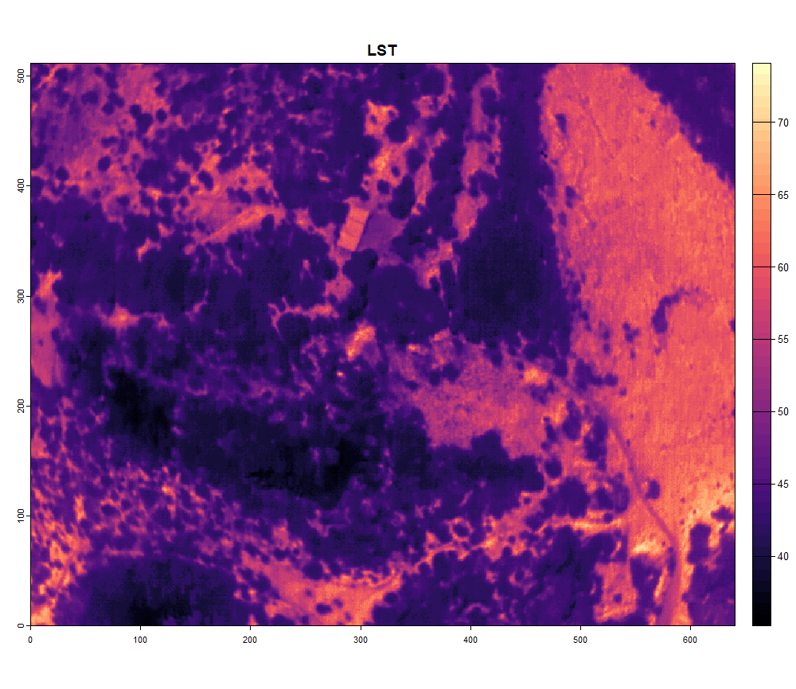

DJI cameras
DJI_cameras.RmdIn this article we will discuss the workflow if you just want to use the Thermal SDK functionallity of DJI.
1. Some background
The thermal images from DJI cameras are stored in their own specific
way. For a start they are written as JPG files instead of tiff.
Furthermore, the DN values in these thermal images cannot be readily
converted to temperatures. This conversion is limited to the DJI
software. However, DJI released a Thermal SDK with Dynamic Link
Libraries which can be incorporated into your code to process DJI
thermal images. On big remark: these can only be accessed on a Windows
or Linux system… In this R package the Thermal SDK is built in as well.
To access the libraries, the package runs a c++ function
(get_temp_dirp_cpp()) in the background using
Rcpp.
2. Create a ThermalUAV
If your have a DJI camera that is compatible with this package (check
through tuav_cameras()), you have two options: - Follow the
image-based workflow - Process the data with the DJI IR Processing tool
(dirp)
In the first case I gladly refer to the article about the image-based
workflow. In this article we discuss the second option. The DJI IR
processing tool is built into the function tuav_dji(). This
function processes the data using the provided libraries from DJI. The
input variables are thus the same as in their DJI Thermal
Analysis Tool software. To keep the geotags and facilitate the
process, first a ThermalUAV object should be created before using the
tuav_dji().
thermal_uav_dji_M3T <- tuav_create(path = "E:/Thermal_Project/Thermal_data_dji/DJI_20240806165425_0078_T.JPG",
# ThermalUAV objects can also consist of only 1 image if desired
camera = "DJI_M3T",
meta_csv = NA,
flight_height = NA)3. Process with DJI IR Processing tool
Once this ThermalUAV object is created, you can call the function
tuav_dji(). Please check carefully the range in which each
parameter should be provided.
dji_M3T <- tuav_dji(thermal_uav_dji_M3T,
obj_dist = 25, # limited to [1-25] in meter
rel_hum = 47.2, # should be between [20 - 100] in %
emissivity = 0.985, # Should be between [0.1 - 1]
refl_temp = 5, # Should be between [-40.0 to 500.0 deg C]
return = TRUE,
export = FALSE,
export_path = NA)When processed, you can plot your image:
